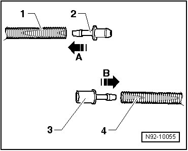
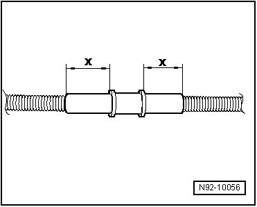

Ridged Hoses, Repairing
Ridged Hoses, Repairing
Special tools, testers and auxiliary items required
• Hot Air Blower (Vas 5179) Or
• Hot Air Blower (V.A.G 1416/) Or
• Heat Gun (Vas 1978/14)
• Area to be repaired must but be under stress of stretching or bending.
• If damaged area is longer than 20 mm, a new section of corrugated hose must be obtained, and two sets of adapters inserted using following the following procedure.
- Trim and remove damaged sections of hose.

- Select corresponding connection pieces - 2 - and - 3 - as well as corresponding heat-shrink sleeves.
- Carefully warm end of hose - 1 -.
- Insert repair adapter - 2 - into hose - 2 - - arrow A -.
- Carefully warm end of hose - 4 -.
- Insert repair adapter - 3 - into hose - 4 - - arrow B -.
- Trim shrink tubing sections so that corrugated hose is covered a minimum of 20 mm - dimension x - of heat-shrink sleeve.

- Slide shrink tubing over corrugated hose, attach adapters together and secure repair with shrink tubing.